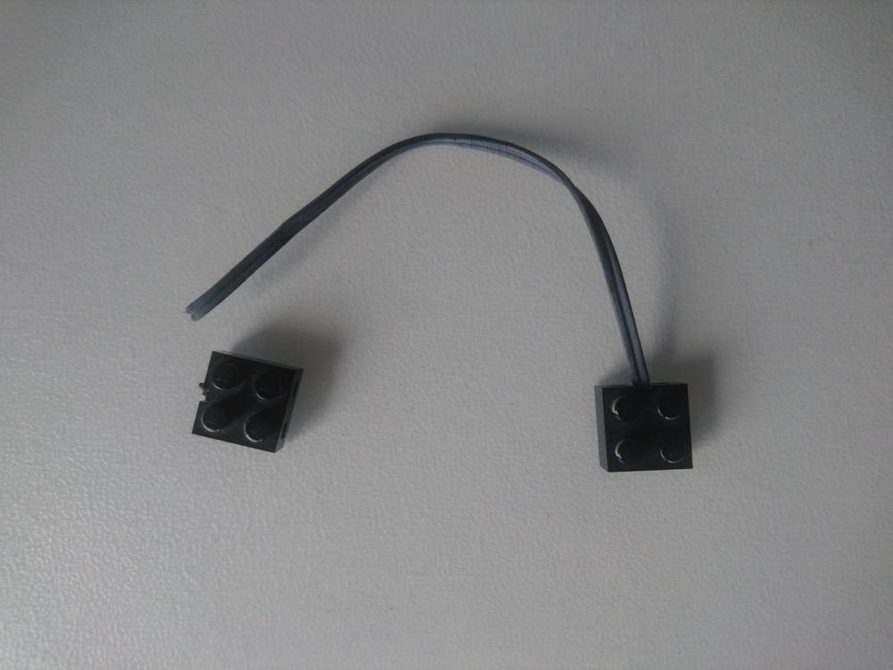
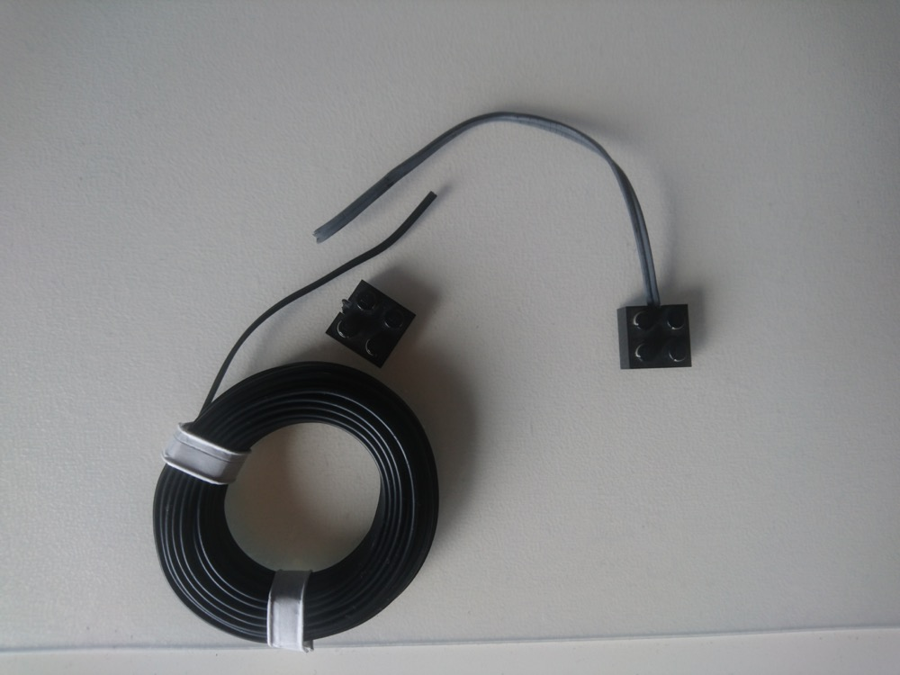
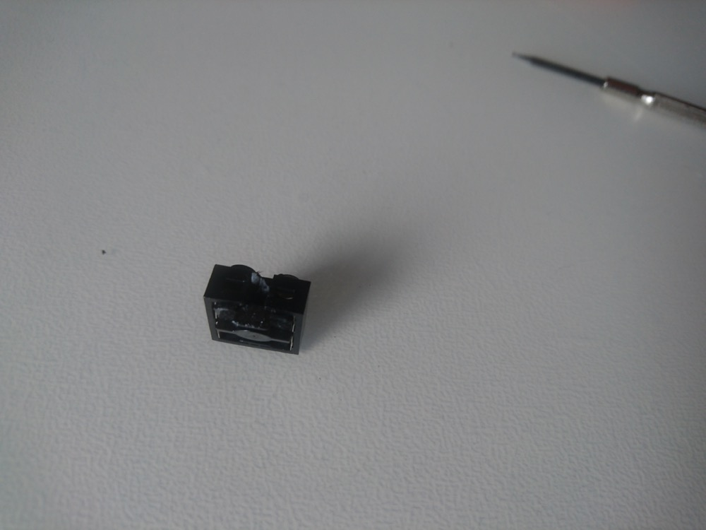
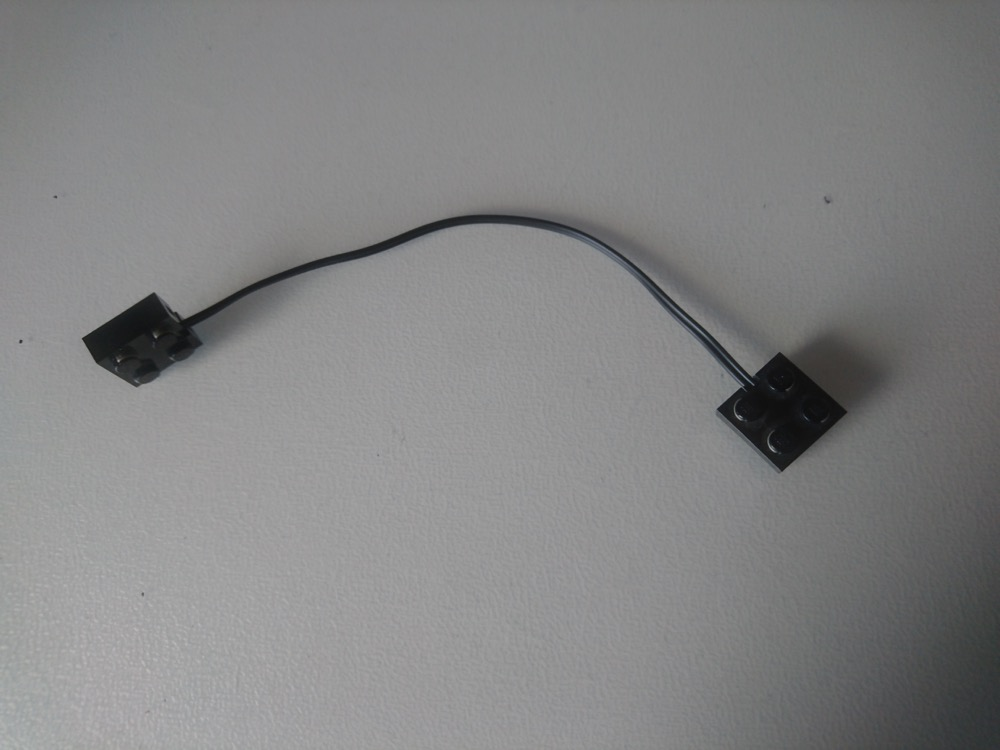

tgauweiler / Lego Cable Repair
Introduction
I found one of my old Lego Technic cable. The cable isolation aged not so well and basically disintegrated in my hand. 
With a little help from Google, I found out that “Zwillingslitze 2x0,14mm² einfarbig schwarz” is an adequate cable replacement. 5 meters cost me, with delivery, around 5€.
Opening & Repair
The new cable is a little bit thinner then the original one, but still looks good enough.

Opening the ends can be done with a small flat screwdriver to unlock two lashes on one side. It is easier to open the side were the cable enters.

Then cutting a piece of the new cable in length of the old one. The teeth inside the ends cut through the isolation when its closed. I did a fast resistance test with my multimeter to ensure everything is connected as expected.

Conclusion
Opening the ends was easier than expected. The 5 meters of new cable should be enough to fix a bunch of these in the future. Replacing the cable took about 10 minutes and it works as good as new.